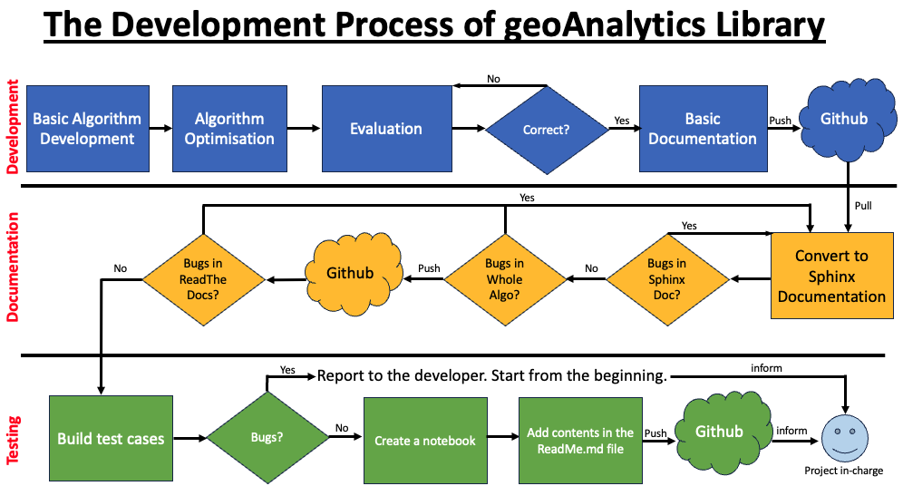
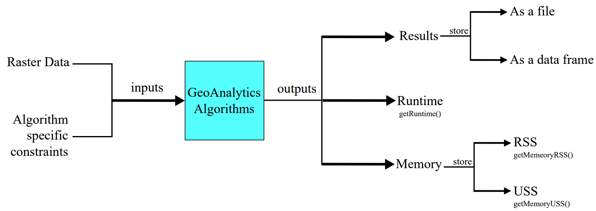

Welcome to geoanalytics’s documentation!
geoAnalytics is an open-source Python-based Machine Learning library developed to discover various forms of useful information hidden in the raster data. The algorithms provided in this library cover a wide-spectrum of machine learning tasks, such as imputation, image fusion, clustering, classification, one class classification, and pattern mining. This library being platform independent can run any operating system.
The library has been designed with a strong research focus, offering robust tools tailored to the needs of geospatial, remote sensing, and planetary data analysis. Its rich collection of modules enables users to process, analyze, and visualize complex spatial datasets with ease.
Flow Chart of Developing Algorithms in geoAnalytics
{kind=link}

Inputs and Outputs of an Algorithm in geoAnalytics
{kind=link}

How to Setup GDAL
1. Installation using Anaconda
For users working with Conda environments, GDAL can be installed easily:
See the Anaconda Installation page for detailed steps.
2. Installation using pip (with system GDAL)
If you prefer using pip, you must install the GDAL system libraries first.
See the pip Installation page for detailed steps.
Areas of Research
The Areas of Research is described here Areas of Research.
To explore the available modules and dive into the API documentation, refer to the navigation below: